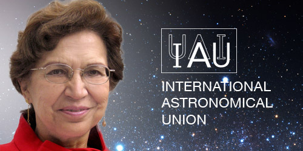

Día Internacional de la Mujer y la Niña en la Ciencia
 Durante siglos, las mujeres fueron relegadas a un papel secundario en la sociedad, con oportunidades limitadas en comparación
Durante siglos, las mujeres fueron relegadas a un papel secundario en la sociedad, con oportunidades limitadas en comparación
con los hombres. Desde las primeras civilizaciones, se les asignaron tareas domésticas y de cuidado, mientras que los hombres
eran quienes exploraban, cazaban y tomaban decisiones. Esta desigualdad se mantuvo a lo largo de la historia, restringiendo el
acceso de las mujeres a la educación y al conocimiento. No fue hasta tiempos más recientes que las mujeres comenzaron a luchar
por sus derechos, logrando avances significativos en su independencia y acceso a la educación. Durante mucho tiempo, solo los
hombres podían asistir a la escuela y formarse académicamente, lo que dejó a muchas generaciones de mujeres sin la posibilidad
de desarrollar su potencial intelectual. Sin embargo, con el paso del tiempo, se reconoció la importancia de incluir a las
mujeres en todos los ámbitos del conocimiento, especialmente en la ciencia y la tecnología. Hoy en día, el Día Internacional
de la Mujer y la Niña en la Ciencia busca fomentar el interés de las mujeres en el estudio y la investigación, promoviendo la
igualdad de oportunidades en el uso del método científico para descubrir, innovar y contribuir al desarrollo de la humanidad.
 Reconocer la labor de las mujeres en la ciencia es clave para construir una comunidad científica más equitativa
y diversa. Durante siglos, sus contribuciones han sido subestimadas, y visibilizarlas ayuda a romper estereotipos
y fomentar la igualdad de oportunidades. Promover el acercamiento de niñas y adolescentes a la ciencia es
fundamental para inspirarlas a desarrollar su potencial. La diversidad en la investigación impulsa la creatividad
y el progreso, beneficiando a toda la sociedad. Garantizar su participación no solo es un acto de justicia, sino
una necesidad para el avance del conocimiento.
Reconocer la labor de las mujeres en la ciencia es clave para construir una comunidad científica más equitativa
y diversa. Durante siglos, sus contribuciones han sido subestimadas, y visibilizarlas ayuda a romper estereotipos
y fomentar la igualdad de oportunidades. Promover el acercamiento de niñas y adolescentes a la ciencia es
fundamental para inspirarlas a desarrollar su potencial. La diversidad en la investigación impulsa la creatividad
y el progreso, beneficiando a toda la sociedad. Garantizar su participación no solo es un acto de justicia, sino
una necesidad para el avance del conocimiento.

 Dra. Silvia Torres-Peimbert:
Dra. Silvia Torres-Peimbert:
Pionera de la Astronomía en México
La Dra. Silvia Torres-Peimbert es una astrónoma mexicana reconocida por sus estudios sobre
la composición química del universo, en especial de las nebulosas. Su trabajo ha sido clave
para comprender la evolución estelar y la formación de los elementos en el espacio. Fue
directora del Instituto de Astronomía de la UNAM y la primera mexicana en presidir la Unión
Astronómica Internacional, un logro que demuestra su impacto en la ciencia a nivel global.
Además, ha impulsado la educación y la divulgación científica, promoviendo el acceso de más
mujeres a la astronomía. ¿Por qué la admiro? Porque su trabajo ha contribuido al conocimiento
del cosmos y ha abierto puertas para que más mujeres participen en la ciencia. Su dedicación y
liderazgo la convierten en un referente para las nuevas generaciones.
La importancia de la mujer en la ciencia. (s. f.). Gaceta del Colegio de Ciencias y Humanidades.
https://gaceta.cch.unam.mx/es/la-importancia-de-la-mujer-en-la-ciencia#:~:text=El%20reconocimien
to%20y%20la%20valoraci%C3%B3n,la%20sociedad%20en%20su%20conjunto
United Nations. (s. f.). Día Internacional de la Mujer y la Niña en la Ciencia | Naciones Unidas.
https://www.un.org/es/observances/women-and-girls-in-science-day
Día Internacional de la Mujer y la Niña en la Ciencia | Comisión Nacional de los Derechos Humanos
- México. (s. f.). https://www.cndh.org.mx/noticia/dia-internacional-de-la-mujer-y-la-nina-en-la-ciencia-1